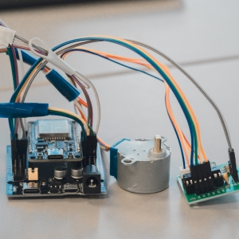
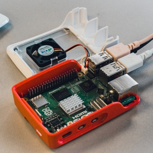
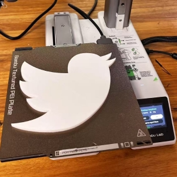
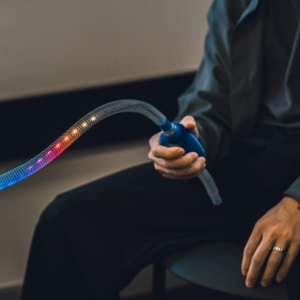
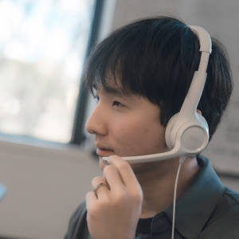
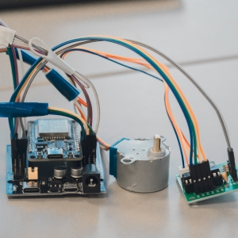
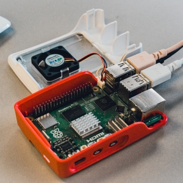
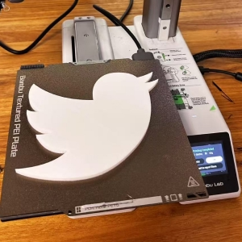
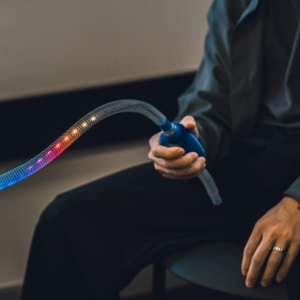
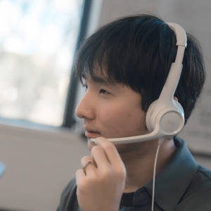

U Tube is a physical-digital hybrid tool that transforms the way we brainstorm—eliminating talking over each other, awkward silences, and passive participants. Designed for teams that value clarity and creativity, it uses a smart turntable to randomly assign turns, giving everyone equal speaking opportunities. The selected participant gains exclusive microphone access and a visible speaking timer through dynamic LED lights, encouraging organized and time-aware communication.
U Tube also introduces a playful feature with custom “feedback tubes”. Team members can swing the tube to extend the speaker’s time or pull it to express doubt. These intuitive gestures enable real-time feedback without verbal interruption, enhancing engagement and idea refinement.
Powered by Raspberry Pi and Arduino, U Tube integrates audio control, gesture recognition, and visual feedback into a seamless experience. The headset-microphone setup prevents crosstalk, while tactile features like squeeze-to-start make interaction feel natural and enjoyable.
Whether used in classrooms, design studios, or meeting rooms, U Tube supports fair participation and focused collaboration. It’s more than just a tool—it’s a new rhythm for team thinking.
 








